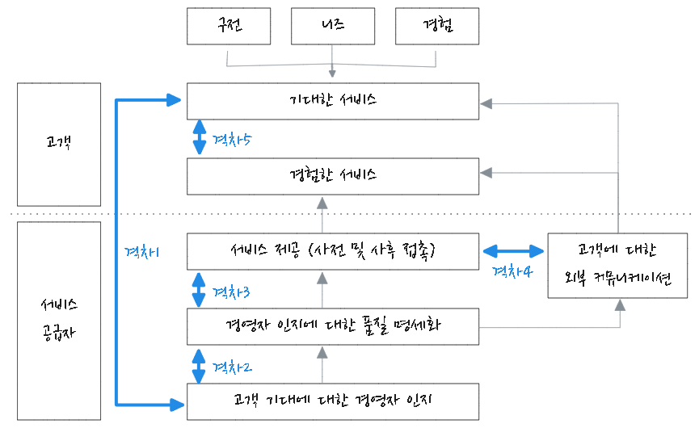
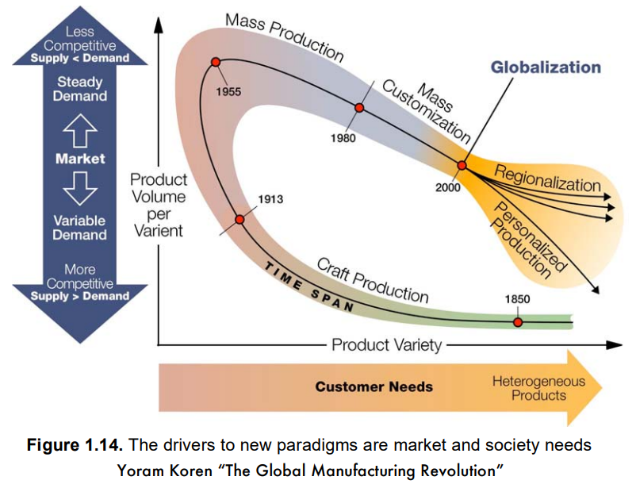

flowchart TD
subgraph 기업전략
전사:::someclass
end
subgraph 사업전략
A사업
B사업:::someclass
C사업
end
subgraph 기능전략
연구개발전략
구매전략
생산전략:::someclass
물류전략
영업전략
end
전사 --- A사업 & B사업 & C사업
B사업 --- 연구개발전략 & 구매전략 & 생산전략 & 물류전략 & 영업전략
classDef someclass fill:#f96
경쟁우위 생산전략
경영전략
경영전략은 의사결정 수준, 즉 사업영역과 경쟁우위에 대한 고민에 따라 기업전략, 사업전략, 기능전략으로 구분한다. 일반적으로 장기적인 기본 방향인 기업전략을 수립하고 이를 구체화하는 사업전략, 기능전략으로 확정, 전개한다. 아래 도표와 같이 기업전략 - 사업전략 - 기능전략으로 계층구조를 갖는다.
기업전략
기업전략(Corporate Strategy)은 기업이 참여할 시장과 산업 범위를 결정한다. 사업 다각화, 수직적 통합, 인수합병, 해외사업진출 등 사업 영역 전반적인 의사결정을 한다.
사업전략
사업전략(Business Strategy)은 시장 진출 사업 단위로 수립하며, 사업 영력을 설정하고 경쟁우위 확보를 위한 구체적이고 실질적인 전략이다. 원가가우위 전략, 차별화 전략, 집중화 전략 등 시장 경쟁위를 위한 의사결정을 한다. 기업이 단일 사업일 경우 기업전략과 사업전략은 동일하다.
기능전략
기능전략(Functions Strategy)은 연구개발, 구매, 생산, 물류, 영업 등 사업 경영 기능별 기본 전략이다. 사업전략 달성을 위해 각 사업 운영에 있어 세부적이고 효율적인 수행방법을 수립한다.
경영전략 수립 프로세스
일반적으로 아래 절차를 통해 경영전략을 수립한다.
flowchart LR 가[기업 비전, 사명, 목표 설정] 가 --> 나[외부 환경 분석] 가 --> 다[내부 역량 분석] 나 & 다 --> 라[전략 수립] --> 마[전략 이행] --> 바[성과 평가]
전략 수립 모델
경쟁우선순위 요소
경쟁우선순위 요소는 생산관리 목표로 볼 수 있다. 즉 기업 생존 부등식에 따라 고객 만족과 효율적 생산을 목표로 전체조직이 지향하는 방향을 나타낸다.
- 기업 생존부등식
-
- 가치(Value) > 가격(Price) > 원가(Cost)
기출
97-4-2, 100-1-7, 100-2-4
flowchart TB 경쟁수선순위 --- 품질 & 원가 & 시간 & 유연성
품질
고객은 양질의 제품 및 서비스를 기대한다.
- 고성능 설계
-
- 고품질 제품 및 서비스 제공
- 균일한 품질
- 일정(균일)한 품질 수준 유지
원가
원가 경쟁우선순위는 낮은 가격과 저가격에 맞도록 전략을 수립할 수 있다.
시간
시간, 즉 속도(speed) 경쟁우선요소는 신속한 납기, 짧은 개발기간, 그리고 정시납품 요소가 있다. 동시공학, 모듈러 설계 등을 통해 개발 기간을 단축할 수 있고 SCM, 물류관리 등을 통해 고객과의 약속을 지킬 수 있다.
유연성
불확실성이 높은 고객 요구 대응을 위해 유연성이 필요하다. 시장 요구 변화에 대응할 수 있는 제품유연성과 수요변화에 효과적으로 대응할 수 있는 수량유연성을 종합적으로 맞출 필요가 있다.
본원적 경쟁전략
마이클 포터의 본원적 경쟁전략(Generic Competitive Strategy)란 특정 산업군 내 경쟁우위를 점하기 위한 방법론이다. 경쟁우위는 기업이 보유한 경영 자원이나 핵심역량이 타 기업과 달리 고유한 성공요인이 된다.

원가우위 전략
원가우위 전략(Cost Leadership Strategy)은 경쟁사보다 낮은 생산원가를 통해 저렴한 원가로 경쟁하는 전략이다.
차별화 전략
차별화 전략(Differentiation Strategy)은 고객 요구에 맞춰 높은 서비스와 품질을 제공하여 경쟁사보다 차별화된 제품으로 경쟁하는 전략이다.
집중화 전략
집중화 전략(Focus Strategy)는 경쟁 범위에 따른 분류로 일반적인 넓은 경쟁 시장이 아닌 틈새 시장(Niche Market)에서 원가우위 또는 차별화 전략으로 경쟁한다.
5-Forces Model
기출
100-1-2, 118-1-1
마이클 포터가 제안한 시장 진입에 있어 산업을 분석하기 위해 제안한 모델이다. 다음 5가지 관점에서 업계 구조 및 시장 매력도를 평가하는 도구이다.
산업 경쟁을ㅇ 결정하는 요인을 파악하고 경쟁 강도와 그에 따른 잠재적 수익성을 파악함이 목적이다.
- 산업구조분석모형
-
- 기존 기업간 경쟁
- 신규 진입자 위협
- 대체제 위협
- 공급자 교섭력
- 구매자 교섭력

- 기존 기업간 경쟁
-
- 동종 업계 경쟁 상황을 분석한다.
- 신규 진입자 위협
-
- 신규 진입 가능성을 분석한다. 진입 장벽이 낮은 경우 경쟁이 치열해 질 수 있다.
- 대체제 위협
-
- 제품 PLC 단계 중 성숙기에서는 대체재가 나타날 수 있다. 예를 드면 CD플레이어가 MP3플레이어로, 데스크탑PC가 노트PC로 대체 되면서 시장 상황에 변화를 가져 왔다. 진입하려난 시장의 대체제를 분석하는 것은 중요한 일이다.
- 공급자 교섭력
-
- 자재 공급이 유일 공급자만 존재하다면 생산 전략에 영향을 미치게 된다. 또한 공급자와의 신뢰 관계 구축을 통해 시장 경쟁에 유리한 위치를 점할 수 있다.
- 구매자 교섭력
-
- 생산하는 제품이 B2B 제품인지 B2C 제품인지, 소비 시장이 집중화 되어 있는지 일반 오픈 마켓인지 분석을 해야 한다.
분석 사례
삼성전자의 스마트폰을 5 Forces Model로 분석하면 아래와 같을 것이다.
- 기존 경쟁간 경쟁 - 원가우위 전략의 샤오미와 차별화 전략의 애플
- 신규 진입자 위협 - 원가 우위 전략으로 신규 진출한 OPPO, vivo
- 대체제 위협 - 스마트폰 대체를 위한 웨어러블 디바이스(Google Glass, Apple Vision Pro, 스마트 워치/링 등)
- 공급자 교섭력 - 모바일 AP를 제공하는 퀄컴과 LSI
- 구매자 교섭력 - B2B 시장인 통신사업자와 자급제를 위한 일반 소비자
이외 전략 수립 프레임워크나 도구는 사업환경분석 참고 한다.
생산전략 수립
기업전략 및 사업전략에 부합한 생산전략을 수립한다. 생산전략 4가지 핵심 구성 요소는 다음과 같다.
생산 사명
생산기능 목적을 정의하고 생산 관리 4대 목표인 품질, 원가, 납기, 유연성 간 상대적 우선 순위를 명시한다. 사업전략이 저원가인 경우 원가를 강조, 차별화인 경우 납기와 유연성을 중요 시 한다.
차별적 능력
경쟁자 대비 특별한 능력 또는 우월한 능력으로 생산 사명과 부합해야 한다. 차별적 능력은 경쟁우위에 관한 것으로 생산전략의 핵심이다. 생산목표 상의 능력(품질, 원가, 납기, 유연성 등)이나 자원상의 능력(우수한 인재, 공급자/구매자 협상력, 기술 등)으로 나타난다.
생산목표
생산 사명을 계량적으로 측정가능한 용어로 나타낸다.
생산정책
생산목표를 달성하는 방법이다. 생산공정, 생산능력, 재고, 노동인력 및 품질, 5가지 생산의사결정 분야에 있어 각각 개발되어야 한다. 설정된 생산관리 목표는 경쟁우선위에 따라 생산 정책을 선택한다.
집중화 생산 전략
각 공장이나 설비에 단 하나의 사명만을 부여하고 이에 초점을 맞춰 생산활동을 수행함으로써 시장 경쟁력을 높이는 전략이다. 집중화 공장은 공장 내 공장 개념으로 구체화 된다. 집중화 공장 기준은 다음과 같다.
- 제품특성 및 요건
- 공정유형
- 기술유형
- 수요 크기 및 특성
- 주문형태(재고생산, 주문생산 등)
글로벌 생산 전략
통신기술과 운송수단 발달 그리고 무역장별 철폐로 인해 글보벌 시장이 가속화 되고 있다. 기업은 시장 흐름에 맞춰 사업과 생산에 있어 글로벌 전략을 수립해야 한다. 따라서 제품설계, 공정설계, 설비 입지, 노동력 정책 등 모든 생산의사결정에 있어 글로벌 생산전략을 고려해야 한다.
고객요구 납기에 다른 생상방식

생산전략 일환으로 고객요구 납기에 따른 생산방식은 4가지 종류가 있다. 주문을 생산으로 변환하는 시점에 있는 재고를 분리지점 재고(Decoupling Point Inventory)고 한다. 생산방식은 분리시점 재고에 따라 다음과 같은 생산방식으로 구분할 수 있다.
- 재고생산방식(MTS, make to stock)
-
- 완재품을 재고로 가지고 있다가 고객 주문에 맞춰 공급하는 생산 방식으로 대부분 공산품은 이러한 방식으로생산
- 저가, 단일품목 특징으로 저렴한 가격으로 빠르 서비스를 고객에게 제공할 수 있다는 장점
- 주문생산방식(MTO, make to order)
-
- 고객 주문이 들어오면 원자재 가공, 반제품 생산 및 완제품 조립이 이루어지는 형태로 공작기계 생산업체들이 대개 이 방식으로 생산
- 다양한 고객 요구에 맞는 맞춤형 제품 생산이 가능
- 주문조립방식(ATO, assemble to order)
-
- 반재품을 재고로 보관하고 있다가고객 주문에 맞추어 조립한 후 제품을 공급하는 형태로 자동차와 같이 옵션 종류가 많고 곡가인 제품들은 주로 이 방식으로 생산
- 중간조립품 형태의 제한된 재고로 다양한 고객요구를 일부 충족시킬 수 있는 장점
- 주문설계방식(ETO, engineer to order)
-
- 고객 주문이 들어오면 설계부터 시작해서자재 구입 및 생산, 조립을 하는 생산방식, 항공기, 선박 그리고 금형 등이 이 방식으로 생산
- 해당 업체가 생산 제품별로 다르게선택할 수 있으며, 복수 생산 방식을 선택할 수 도 있고, 제품 수명주기상 어떤 위치에 있는가를 기준으로 시점에 따라 생산방식을 다르게 선택
- 고객 요구를 다앙하고 유연한 생산 방식으로 충족
제품 수명 주기에 따른 생산방식

- 계획기
-
- 신제품 혹은 서비스에 대한 아이디어가 창출되고 선정되는 과정을 거쳐서 최종 설계가 이루어진다. 이 단계에서는 아직 제품이 출시되지 않았기 때문에 제품이나 서비스에 대한 이익은 음(-)이 된다.
- 수입은 없지만 개발과 관련된 제반비용은 발생하게 된다. 신제품 혹은 서비스가 생산능력과 잘 부합되도록 하귀 위해 생산부서도 이 단계에 참여하여야 한다(동시공학 참고).
- 도입기
-
- 판매가 시작되고 그 결과 이익이 발생하기 시작한다. 생산공정은 여전히 유동적이며 계속적인 진화를 통하여 개선되어 간다.
- 매출은 아직 최고점에 도달하지못했기 때문에 단위당 이익은 클 수도 있지만 연간 이익은 작은 수준이다.
- 성장기
-
- 제품이나 서비스 매출이 극적으로 증가하게 되고 이익 역시 증가한다. 그러나 이 단계에서 종종 적절한 시기에제품 공급을 할 수 없는 경우가 있다. 이러한 경우 해결 방법은 하청이나 잔업을 하는 것이며, 무리한 작업으로 인한 생산성 저하가 우려되므로 시간조정으로부터 얻는 이익과 저하된 생산성 간 상쇄관계를 주목해야 한다.
- 이 단계에서는 생산부서의 중요한 역할은 여러 가지 수단을 강구하여 생산능력을 확장함으로써 수요를 충족시키는 것이며, 효율성은 부수적인 문제가 된다.
- 성숙기
-
- 매출은 안정되고 이익은 감소하기 시작한다. 새로운 경쟁자가 진입하게 됨으로써 경쟁이 심화되어 원가가 상승하게 되고 단위당 이익률이 둔화되는 문제에 직면하게 된다.
- 마케팅부서에서는 제품이나 서비스를 차별화하는데 노력을 집중하며, 생산부서는 효율성을 강조해야만 한다.
- 쇠퇴기
-
- 시장에서 도태되는 시기이다. 즉 기존제품에 대한 수요는 소멸되거나 또는 보다 품질이 우수하고값이 저렴한 제품으로 대체된다.
- 매출과 이익은 기업이 궁극적으로 제품을 포기하기 전까지 계속적으로 감소하게 된다.
제품 개발 과정
이미지 추가
제품 선정 단계에서는 타당성 조사가 이루어지면 마케팅 부서에서 담당한다. 제품선정 과정 산출물로 성능명세서가 개발되며 예비제품설계 입력이 된다. 성능명세서가 최종 제품설계 단계에서 설계 기술자에게 보내지면 예비적인 기술명세서와 세부적인 설계명세서가 개발된다.
서비스업
서비스 품질 5가지 차원
SERVQUAL 모델은 서비스 품질을 신뢰성, 반응성(대응성), 확신성, 공감, 유형성의 5가지 차원으로 구분하여, 각 차원이 고객의 기대를 충족시키는 정도를 평가한다. 이를 통해 기업은 서비스 품질을 향상시키기 위한 전략을 마련할 수 있다.
| 차원 | 차원.정의 |
|---|---|
| 신뢰성(REliability) | 악속한 서비스를 믿을 수 있고 정확하게 수행할 수 있는 능력 |
| 확신성(Assurance) | 직원 지식과 예절, 신뢰와 자신감을 전달하는 능력 |
| 유형성(Tanglibles) | 물리적 시설, 장비, 직원, 커뮤니케이션 외양 |
| 공감성(Empathy) | 회사가 고객에게 제공하는 개별적 배려와 관심 |
| 대응성(Responsiveness) | 고객을 돕고 신속한 서비스를 제공하려는 태세 |
- 서비스 품질 평가
-
- 기대: 고객이 서비스 제공자를 선택하기 전에 가질 것으로 예상되는 서비스 품질
- 실제 경험: 고객이 실제 경험한 서비스 품질
서비스 품질 차이는 “기대 - 실제 경험”으로 측정되며, 이 차이가 클수록 고객 만족도는 낮아지며 서비스 품질이 부족하다고 평가된다. 이 차이를 줄이는 것이 서비스 품질 향상에 있어 핵심이다.
SERVQUAL 모형 장점과 한계는 다음과 같다.
| 구분 | 장점 | 한계 |
|---|---|---|
| 고객 중심 | 고객 기대와 실제 경험 간 차이를 명확히 이해하고, 서비스 품질 개선에 필요한 정보를 제공한다. | 고객 기대 수준은 시간과 상황에 따라 변할 수 있어, 지속적인 조정과 업데이트가 필요하다. |
| 다각적 평가 | 서비스 품질을 5가지 차원에서 종합적으로 평가하여, 세부적인 개선 포인트를 도출할 수 있다. | 각 차원의 중요도가 산업이나 상황에 따라 다를 수 있어, 특정 산업에 맞는 세부 차원 추가가 필요할 수 있다. |
| 서비스 향상 | 고객의 만족도를 높이기 위한 서비스 개선 방향을 제시한다. | 서비스 품질을 완벽하게 측정하기 어려운 경우가 있으며, 일부 서비스 특성을 반영하기 어려울 수 있다. |
| 적용 가능성 | 다양한 산업에서 적용 가능하며, 기업이 서비스 품질을 지속적으로 모니터링하고 개선하는 데 유용하다. | 서비스에 대한 주관적 성격으로 인해, 고객 경험이 사람마다 달라 동일한 서비스라도 평가가 다를 수 있다. |
서비스 격차 모형

서비스 격차 모형(Service gap model)은 고객이 경험하는 서비스 품질과 기대 사이의 차이를 설명하는 모델이다. 이 모형은 서비스 제공자가 고객의 기대를 충족시키지 못하는 이유를 파악하고, 그 격차를 줄이기 위한 전략을 세울 수 있도록 도와준다. 서비스 격차 모형은 5가지 주요 격차(차이)를 식별한다.
- 격차 1. 고객 기대와 서비스 인식 간의 격차 (Gap 1: Customer Expectation vs. Management Perception)
-
- 설명: 고객의 기대와 서비스 제공자가 그 기대를 어떻게 인식하는지 간의 차이이다. 이 격차는 서비스 제공자가 고객의 실제 기대를 잘 이해하지 못할 때 발생한다.
- 원인: 시장 조사 부족, 고객 피드백 미흡, 잘못된 가정 등
- 해결책: 고객의 기대를 제대로 파악하기 위한 시장 조사와 피드백 시스템 강화가 필요하다.
- 격차 2. 서비스 품질 사양과 실제 제공 간의 격차 (Gap 2: Management Perception vs. Service Specification)
-
- 설명: 서비스 제공자가 고객의 기대를 어떻게 인식하는지와 이를 기반으로 설정한 서비스 사양(기준) 사이의 차이이다. 이는 서비스가 실제로 제공될 때 기대에 부합하는지 여부에 영향을 미친다.
- 원인: 서비스 설계 시 고객 기대를 충분히 반영하지 못하거나, 내부 기준을 잘못 설정한 경우 발생
- 해결책: 고객의 기대를 정확히 반영한 서비스 설계와 사양 설정이 필요하다.
- 격차 3. 서비스 사양과 서비스 제공 간의 격차 (Gap 3: Service Specification vs. Service Delivery)
-
- 설명: 서비스의 사양이나 기준이 실제 서비스 제공 과정에서 어떻게 실행되는지 간의 차이이다. 즉, 설계된 서비스 품질 기준이 실제로 제공되는 서비스에 충족되지 않는 경우 발생한다.
- 원인: 직원의 훈련 부족, 자원 부족, 시스템 문제 등
- 해결책: 서비스 제공 표준을 엄격하게 관리하고, 직원 교육과 자원 할당을 개선하는 것이 필요하다.
- 격차 4. 서비스 제공과 고객 인식 간의 격차 (Gap 4: Service Delivery vs. External Communication)
-
- 설명: 실제로 제공된 서비스와 고객이 기대하는 서비스에 대한 외부 커뮤니케이션(광고, 마케팅 등) 사이의 차이이다. 광고나 마케팅 활동이 실제 서비스 제공을 과대 포장하거나 오도할 때 발생한다.
- 원인: 과도한 마케팅, 잘못된 서비스 설명 등
- 해결책: 광고나 마케팅 자료가 실제 서비스 제공과 일치하도록 조정해야 한다.
- 격차 5. 고객 인식과 기대 간의 격차 (Gap 5: Customer Expectation vs. Perceived Service)
-
- 설명: 고객이 기대한 서비스와 실제로 경험한 서비스 간의 차이이다. 이는 가장 중요한 격차로, 서비스가 고객의 기대에 비해 부족하면 고객의 불만을 초래할 수 있다.
- 원인: 서비스 제공 과정에서 발생하는 문제, 불완전한 서비스 제공, 또는 고객의 기대 관리 실패 등
- 해결책: 고객의 기대를 정확하게 설정하고, 서비스 제공 후 그 경험을 지속적으로 개선하려는 노력이 필요하다.
- 서비스 격차 모형의 중요성
-
- 서비스 품질 개선: 각 격차를 식별하고 해결함으로써 고객의 기대에 부합하는 서비스를 제공할 수 있다.
- 고객 만족 향상: 고객의 기대와 실제 경험 사이의 격차를 줄이면, 더 높은 고객 만족도를 얻을 수 있다.
- 경쟁력 강화: 서비스 품질을 개선하면, 경쟁에서 우위를 점하고 고객 충성도를 높일 수 있다.
제조 프로세스와 서비스 프로세스
제조 프로세스는 물리적인 제품을 생산하는데 집중하며, 대량 생산, 표준화된 과정이 가능하고, 결과물이 재고로 남을 수 있다. 이에 반해 서비스 프로세스는 고객과 상호작용을 중심으로 한 무형 서비스 제공이 특징이며, 고객 참여도가 높고, 맞춤형 서비스가 요구된다.
| 구분 | 제조 프로세스 | 서비스 프로세스 |
|---|---|---|
| 주요 특징 | 물리적 제품을 생산하는 과정 | 무형의 서비스를 제공하는 과정 |
| 결과물 | 구체적인 물리적 제품 | 서비스(예: 상담, 수리, 교육, 의료 등) |
| 생산 과정 | 원자재를 가공하여 최종 제품을 만든다. | 고객의 요구에 맞춰 서비스 제공, 주로 인적 자원이 개입된다. |
| 생산성 측정 | 생산된 제품의 양, 품질, 효율성 등으로 측정됨 | 고객 만족도, 서비스 품질, 처리 시간 등으로 측정됨 |
| 유형 | 물리적 제품, 재고화 가능, 물리적인 형태를 가짐 | 무형, 재고화 불가, 고객과의 상호작용에 의존 |
| 고객 참여 | 고객은 최종 제품에 대한 소비자로, 직접적인 참여가 적음 | 고객은 서비스의 제공 과정에서 직접 참여하거나 영향을 미침 |
| 생산 비용 | 주로 자재비, 인건비, 기계비 등으로 구성 | 주로 인건비, 기술력, 고객 대응 시간 등으로 구성 |
| 표준화 가능성 | 높은 표준화 가능 (대량 생산) | 표준화가 어려움, 개인 맞춤형 서비스 제공에 집중 |
| 설비 및 자원 | 대형 기계와 설비, 자재가 필요 | 인력, 공간, 기술적 장비 등이 주로 필요 |
| 일관성 | 제품은 동일한 조건에서 일정하게 생산 가능 | 서비스는 고객의 요구나 상황에 따라 다르게 제공될 수 있음 |
| 품질 관리 | 생산 공정에서의 품질 관리, 불량률 감소 | 고객의 서비스 경험을 통한 품질 관리 |
서비스 설계 시 고려사항
서비스 설계는 고객에게 제공할 서비스 품질과 효율성을 극대화하기 위해 체계적으로 계획하고 설계하는 과정이다. 서비스 설계를 통해 고객 요구와 기대를 충족시키고, 효율적인 운영을 보장할 수 있다. 이를 위해서는 여러 가지 요소를 고려해야 한다. 아래는 서비스 설계 시 고려해야 할 주요 사항이다.
- 서비스 설계시 고려사항
-
- 고객의 요구와 기대 이해
- 서비스 설계 첫 번째 단계는 고객의 요구와 기대를 정확히 파악하는 것이다.
- 고객이 원하는 가치를 제공하기 위해 설계해야 하며, 이는 고객의 요구 조사, 피드백, 설문 조사 등을 통해 구체화된다.
- 서비스 품질에 대한 고객의 기대를 이해하고 이를 반영해야 한다.
- 서비스 프로세스 설계
- 서비스 제공 과정에서의 프로세스를 효율적이고 효과적으로 설계해야 한다.
- 고객과의 접점을 포함한 서비스 흐름을 명확히 하고, 불필요한 단계를 제거하여 효율성을 높인다.
- 고객 대면 서비스와 백오피스(비대면 지원 서비스)의 역할과 상호작용을 정의해야 한다.
- 서비스 접점(터치포인트) 설계
- 서비스 접점은 고객과 서비스 제공자가 만나는 모든 순간을 의미한다. 예를 들어, 웹사이트, 고객센터, 매장, 앱 등이 있다.
- 각 접점에서 고객 경험을 일관성 있게 설계하여 긍정적인 인상을 남길 수 있도록 해야 한다.
- 각 접점에서 제공되는 서비스가 고객 요구와 기대를 충족할 수 있도록 관리한다.
- 서비스 품질 관리
- 서비스 품질은 일관성과 고객 만족도를 높이는 데 중요한 요소이다.
- SERVQUAL 모델(서비스 품질 5가지 차원) 등을 활용하여 서비스 품질을 측정하고, 품질 수준을 유지하는 방법을 설계해야 한다.
- 고객 피드백을 지속적으로 반영하여 서비스 품질을 개선한다.
- 기술적 요소 고려
- 서비스 설계 시 기술적인 요소는 중요한 역할을 합니다. 예를 들어, 자동화, 디지털화, 인공지능(AI) 등을 활용할 수 있다.
- 서비스 제공 과정에서 IT 시스템과 디지털 플랫폼이 원활하게 작동하도록 설계해야 하며, 기술적 장애를 예방하는 것이 중요하다.
- 서비스 제공자의 역량과 교육
- 서비스 제공자는 서비스 품질에 직접적인 영향을 미친다. 직원 교육과 역량 개발은 필수적이다.
- 서비스 표준을 설정하고 이를 제공자가 준수할 수 있도록 교육하는 것이 중요하다.
- 직원이 고객과 상호작용하는 과정에서 상호 존중, 적극적인 태도, 고객의 요구에 맞는 해결책을 제공할 수 있도록 한다.
- 비용 관리 및 효율성
- 서비스 설계 시, 서비스 품질을 높이면서도 비용 효율성을 고려해야 한다.
- 비용을 절감할 수 있는 프로세스 개선과 효율적인 자원 배분이 중요하다.
- 불필요한 비용을 줄이기 위한 방법을 설계하면서도, 서비스의 품질이 저하되지 않도록 한다.
- 지속 가능성
- 서비스 설계는 환경적, 사회적 지속 가능성을 고려해야 한다.
- 친환경적인 서비스 제공, 자원 절약, 사회적 책임 등을 고려하여 설계를 진행한다.
- 지속 가능한 발전을 위한 서비스 모델을 개발하고, 고객의 사회적 요구에 맞추어야 한다.
- 위기 관리 및 유연성
- 예상치 못한 위기 상황(예: 자연 재해, 기술적 오류, 경제적 변화)에 대비한 유연성을 가진 설계가 필요하다.
- 비상 대응 계획과 위기 관리 프로세스를 설계하여 서비스 중단이나 품질 저하를 방지해야 한다.
- 규제 및 법적 요구사항
- 서비스 설계 시, 법적 요구사항과 규제를 준수해야 한다.
- 서비스가 제공되는 국가나 지역의 법률을 따르고, 개인 정보 보호(GDPR 등) 및 소비자 보호 법규를 고려해야 한다.
- 산업별 규제도 고려하여 서비스 설계를 진행해야 한다.
- 지속적인 개선과 혁신
- 서비스 설계는 지속적인 개선과 혁신을 염두에 두고 진행해야 한다.
- 고객의 요구와 시장 상황은 계속 변화하므로, 서비스가 이를 반영하도록 정기적인 리뷰와 개선 작업이 필요하다.
- 서비스 혁신을 통해 경쟁 우위를 유지하며, 고객에게 가치를 지속적으로 제공할 수 있어야 한다.
- 고객의 요구와 기대 이해
서비스 설계 시에는 고객 요구와 기대를 정확히 반영하고, 효율적이며 품질 높은 서비스를 제공할 수 있는 구조를 만들어야 한다. 이를 위해 고객 경험, 서비스 프로세스, 기술적 요소, 법적 규제 등 여러 측면을 균형 있게 고려해야 하며, 지속적인 개선과 혁신이 가능하도록 설계해야 한다.
생산 시스템
생산
생산이란 생산요소(투입물 - 인력, 원자재, 기계설비, 에너지, 정보 등)를 유형, 무형의 경제재로 변환(생산공정)시킴으로써 효용을 산출하는 과정이다.
flowchart LR Input[투입] --> Process([변환]) --> Output[산출]
시스템적 사고
시스템
시스템(system)은 각 구성요소들이 상호작용하거나 상호 의존하여 복잡하게 얽힌 통일된 하나의 집합체(unified whole)이다. 또는 이 용어는 복잡한 사회적 체계의 맥락에서 구조와 행동을 통제하는 규칙드의 집합체를 일컫기도 한다. 1
어떤 환경에서 주어진 목적을 달성하려는 서로 관련성을 가진 식별 가능한 여러 요소 집합으로 다음과 같은 특성을가진다.
집합성
두 개 이상의 식별 가능한 단위체로 구성된다.
상호관련성
단위체 간 서로 연관성이 있거나 상호관계, 상호작용을 한다.
목적추구성
목적을 추고하고 그것을 달성하기 위해 동작한다.
환경적응성
실시간으로 변화하는 환경에 적응해야 한다.
시스템 유형은 다음 같다.
| 개방형 시스템(Open Loop System) | 폐쇄형 시스템(Closed Loop System) |
|---|---|
|
|
시스템 사고
시스템 사고(systems thinking)는 세상을 여러 부분으로 나누는 것이 아니라 전체와 관계의 관점에서 바라봄으로써 세상의 복잡성을 이해하는 방법이다. 시스템 이론과 시스템 과학 등을 이론적인 기반으로 한다. 기존의 분석적 사고가 환원주의에 기반하여 대상을 쪼개어 나가는데 반해 시스템적 사고는 전일주일(holism)에 기반하여 대상을 살아있는 유기체로 보며 부분을 넘어선 젠체를 파악하려 한다. 시스템 사고는 1950년대 말 MIT 포리스터 교수가 개발한 시스템 다이나믹스(System Dynamics)라는 학문을 뿌리에 두고, 해당 학자들이 어려운 컴퓨터 모델링 부분을 떼어 내어 시스템 사고라는 영역을 만드어 널리 알려졌다. 2
시스템적 접근
시스템적 접근(System approach)는 전체 입장에서 부분을 이해하고 상호 관련성을 추구하여 문제 본질을 파악하고 해결하는 방식이다.
flowchart TB A[System Approach] --- B[System Philosophy] & C[System Analysis] & D[System Management]
System Philosophy - 철학적, 관념적, 이론적
어떤 현상/사물을 하나의 단일체로 인식하고 전반적 사항을 파악
System Analysis - 문제 해결 능력
체계적, 과학적인 문제해결 기법으로 목표달성과 자원의 효율적 활용을 추구
System Management - 실용적
능률적, 효율적인 시스템 설계와 운영(구성요소 기능의 유기적 조정과 통합)
시스템적 접근 효과는 다음과 같다.
- 주어진 문제를 전체적인 입장에서 명확히 밝힐 수 있다.
- 구성요소 간 상호관련성 내지 상호작용을 이해할 수 있다.
- 관련되는 요인의 원인과 결과를 밝힐 수 있다.
- 문제가 되는 변수와 제약요소와의 상호관계를 밝힐 수 있다.
생산 시스템
생산 시스템은 생산 목표를 달성하기 위하여 여러 가지 자원을 투입하여 제품이나 서비스로 변환시키는 유기체이다. 생산 시스템은 입력(Input)을 변환(Process)하여 산출(Output)하는 과정으로 I/O 시스템이라고도 한다. 일반적인 구조는 다음과 같다.

- 투입 (Input)
-
- 생산 과정에서 사용되는 자원들을 말한다. 여기에는 원자재, 노동력, 자본, 에너지, 정보 등 모든 물리적, 인적 자원이 포함된다. 투입은 생산 과정의 시작을 의미하며, 이 자원들이 변환 과정을 거쳐 최종 제품이나 서비스로 바뀐다.
변환 (Process)
투입된 자원을 실제로 제품이나 서비스로 변환하는 과정이다. 이 과정은 물리적, 화학적, 기계적, 기술적 방법 등을 사용하여 원자재를 최종 제품으로 바꾸는 작업을 포함한다. 변환 과정은 품질 관리, 생산 계획, 작업 절차 등을 포함하며, 시스템의 효율성과 직결된다.
- 산출 (Output)
-
- 변환 과정을 거쳐 생산된 최종 결과물이다. 이 결과물은 고객의 요구를 만족시키는 제품이나 서비스가 되어야 한다. 산출은 품질, 양, 시기 등을 고려하여 생산되어야 하며, 이는 결국 시장에 공급되는 형태로 나타난다.
- 피드백 (Feedback)
-
- 생산시스템에서 발생한 결과를 바탕으로 향후 생산 활동을 개선하는 데 필요한 정보를 제공한다. 피드백은 시스템의 성과를 평가하고, 문제를 식별하며, 개선점을 찾아내는 중요한 역할을 한다. 예를 들어, 제품의 품질 문제가 발생했을 때, 이를 해결하기 위한 조치나 프로세스 개선이 필요할 수 있다.
- 환경 (Environment)
-
- 시스템이 작동하는 외부 및 내부 환경을 의미한다. 환경은 시장 상황, 경쟁, 경제적 조건, 규제 및 법률, 기술 변화 등 외부 요인과, 조직의 문화, 기술 수준, 내부 자원의 상태 등 내부 요인까지 포함한다. 환경은 시스템의 운영과 결과에 영향을 미치며, 이를 적절히 반영해야 시스템이 지속 가능하고 경쟁력을 유지할 수 있다.
생산 시스템 종류
생산 시스템은 산출의 종류와 수량에 따라 나뉘게 된다.
flowchart TB 생산시스템 --- 단속생산 & 연속생산 단속생산 --- 프로젝트생산 & 잡샵생산 & 배치생산 연속생산 --- 대량생산 & 흐름름생산
- 단속생산
-
- 생산 흐름이 불규칙한 형태로 주로 주문 생산에서 이루어진다.
- 연속생산
-
- 정유나 화학제품과 같이 정해진 품목을 고정된 플랜트 시설을 통해 연속적으로 대량 생산하는 방식이다.
- 프로젝트(Project) 생산
- -1회성 생산으로 건물이나 교량, 선박 등 위치가 고정되어 장소에 제한을 받는 형태이다. 제품은 고정되어 있고 자재 및 공정이 시기별로 변경되면서 생산이 진행된다. 진도 관리를 위해 PERT/CPM 등이 사용된다.
- 잡샵(Job Shop) 생산
-
- 가구나 기계 장비 등 주문자 요구에 따라 생산하는 방식으로 소량생산하는 방식이다. 여러 종류 부품 가공이 이루어지므로 범용성이 있는 장비가 사용된다. 일정 관리를 위해 MRP/CRP 등이 사용된다.
- 배치(Batch) 생산
-
- 다품종 소량생산인 잡샵 생산과 소품종 대량생산인 연속공정 중간 형태로 몇몇 표준화된 품목을 묶어 로트 단위로 단속적으로 생산하는 방식이다. 제빵, 제화, 도자기 등의 제품 생산에 적합하다.
- 대량(Mass) 생산
-
- 라인생산이라고도 하며 소품종 대량생산을 위한 형태이다. 표준화된 자재와 부품이 고정된 작업순서에 따라 하나의 생산라인을 따라 이동하며 공정 처음부터 끝까지 중단없이 대량으로 제품을 효율적으로 생산한다. 전자제품, 자동차 등이 해당한다.
- 흐름(Process) 생산
-
- 표준화된 제품이 대량으로 고도로 자동화된 시설에서 연속적으로 제품을 생상하는 형태이다. 자본집약적 공정으로 가동률을 최대로, 재고수준을 최소로 유지하여 생산효율성 극대화를 목표로 한다. 정류, 화학제품, 주료, 제철 등이 해당한다.
생산시스템 변천

경쟁우위 요소와 생산 목표에 따라 생산시스템이 변천해 왔다.
테일러 시스템
테일러 시스템은 F.W. Taylor가 창안한 생산관리와 경영 전반에 걸친 시스템이다. 테일러 시스템의 핵심은 다음과 같다.
- 고임금
- 저노무비
- 과업관리
19세기 말, 기업 규모 확대 및 노사 분규 중대에 따른 노동생상성 향상 문제가 나타났다. 노동 관리에 과학적 분석을 가하고 제도를 개선하여 대응하려 만든 관리법으로 작업 동작을 과학적으로 분석한 뒤 불필요한 동작을 최소화하고 표준 동작을 책정하고 조합하여 평균 작업시간을 산출했다. 그에 따른 목표를 세우고 과업 달성 여부에 따라 성과급 제도 등을 고안했다.
테일러 시스템의 4가지 원리는 다음과 같다.
- 과업관리
- 직능식 직장제도
- 차별적 성과급제
- 과학적 관리법법
flowchart LR 시간연구 & 동작연구 --> 0 --> 1[작업관리] subgraph 0[표준작업량 설정] 00[일류 노동자 선택<br>작업을 부분 동작으로 구분<br>동작별 소요 측정<br>여유시간 더하여 설정] end subgraph 작업관리[과학적 관리 운영 제도] direction LR 11[기획부제] 12[직능별 직장제] 13[지도표제] 14[차별적 성과급제] end subgraph 4대원칙 direction LR 21[공정한 1일 과업량] 22[작업조건 표준화] 23[과업 성공 시 성과급제] 24[과업 실패 시 손실] end 1 ---> 4대원칙 1 ----> 작업관리 classDef transclass fill:#fcfcfc, stroke:#fcfcfc
- 기획부 제도
-
각 기획부를 두어 작업자를 관리하여 작업자는 생산작업에 집중하도록 함
- 기능적 직장 제도
-
기능적 책임자가 작업자에게 분업적으로 지도하도록 함
- 작업지도표(카드) 제도
-
작업지시 시 주요 사항을 작업지도표(카드)에 기록하도록 함
- 차별적 성과급 제도
-
과업 성공 시 작업자에 대한 성과급 지급
포드 시스템
포드(Ford) 시스템은 H.Ford가 포드 자동차 회사에서 대량생산방식으로 확립한 자동차 이동 조립법으로 컨베이어 시스템이라 한다. 생산산을 표준화하고 컨베이어와 작업자를 동시 관리 했다. 고임금과 저가격으로 사회에 봉사한다는 것을 목표로 했다.
디트로이트 공장에서 완성하였다고 하여 디트로이트 오토메이션(Detroit automation)이라 하며, 대량생산의 획기적인 계기가 되었다고 하여 대량생산 시스템이라고 한다.
포드 시스템의 전제조건은 다음과 같다.
- 생산 표준화
- 컨베이어 시스템
- 동시관리
- 대량소비 시장장
포드 시스템 성과는 다음과 같다.
- 생산 표준화로 대량 생산 가능
- 컨베이어 시스템으로 생산 규칙성 실현
- 종합적인 생산관리 가능
포드 시스템의 장점과 단점은 다음과 같다.
| 장점 | 단점 |
|---|---|
|
|
도요타 생산 시스템

포드의 대량생산방식은 일본에서 적용할 수 없다는 도요타 자동차의 도요타 에이지, 오노 다이이치 판단에 따라 도요타만의 생산방식을 정립하였다. 도요타 생산 방식은 소로토 생산으로 생산현장 낭비를 제고하고 다품종 소량 생산체제를 지향한다. 이를 위해서 적시생산(JIT)과 자동화(Jidoka)라는 개념을 도출하여 생산기술 및 운영체제, 조직을 정비하였다. 1949년 도요타는 자동차 생산경쟁력이 없다고 판단하고 자동차 사업 매각까지 검토하였으나 기계공업의 근간인 자동차 사업 매각은 일본 ㄴ경제에도 큰 부담이 될 것으로 판단한 정부의 구제지원을 받고 치열한 생존경쟁을 벌여야 하는 위기의식도 TPS 탄생 배경이라 할 수 있다.
하지만 판매력, 하청 관리력, 기술력, 생산 평준화가 가능한 체제, 생산관리 체제의 정비 등 여러 조건이 갖춰져야 원활한 TPS 운영이 가능하다. 간판방식이 하청업체에게 큰 부담으로 작용하여 재고를 떠 안기도 하며 도요타 생산은 전후 공정 생산평준화 등으로 작업자에게 과도한 노동강도, 압박을 주는 비인간적 공장으로 묘사되기도 했다.
7대 낭비
도요타 생상 방식은 본질적으로 다음 7가지 낭비 제거를 목적으로 한다.
- 불량의 낭비
- 재고의 낭비
- 과잉생산의 낭비
- 가공의 낭비
- 동작의 낭비
- 운반의 낭비
- 대기의 낭비
이런 낭비 제거 및 근본 예방을 위해 다음과 같은 하위 시스템을 구축하였다.
flowchart TB 낭비제거 --- 1[JIT 생산] & 2[소로트 생산] & 3[자동화] & 4[TQC 및 현장개선] classDef transclass fill:#fcfcfc, stroke:#fcfcfc
JIT 생산
flowchart TB 0[JIT 생산] --- 1[간판방식] & 2[생산 평준화] & 3[소로트 생산] & 4[설비배치와 다기능공] classDef transclass fill:#fcfcfc, stroke:#fcfcfc
- 간판방식
-
- 어떤 제품(부품)이 얼마나 필요한가를 알려 주는 역할
- 발주점 방식을 응용한 것으로 최소 재고를 위한 간판이라는 눈으로 보는 관리 방식을 채택
- 간판은 엽서 크기 카드나 전표 형태로 작업지시표 내지 이동표 역할을 하여 작업이나 운반에 관한 정보를 제공하거나 물품 관리 기능을 수행
- 뒷공정이 앞공정으로부터 물품을 인수할 때 사용하는 인수간판과 생산부문에 대한 생산지시용 생산간판 사용
- 생산 평준화
-
- 간판 시스템은 생산공정 간 동기화 개념으로 운영되기 때문에 특정 공정 생산변동이 발생할 경우 전/후 공정으로 연쇄반응을 일으키는 악순환 발생
- 문제가 발생되지 않기 위해서는 각 공정 생산성(특히 생산속도)은 균일화가 필요요
- 소로트생산
-
- 생산 평준화를 달성하기 위해서 가능한 로토를 작게 운영
- JIT 생산을 위해 유연하고 신속한 생산을 하려면 리드 타임을 단축 필요
- 리드타임(lead time)은 “가공시간 + 정체시간”으로 표현되며 리드타임을 짧게 할 경우 가공, 정체 시간 단축 외에도 재고가 줄고 재고가 줄어 재고 수면에 잠긴 문제점이 나타남
- 설비배치와 다기능공
-
- 수요변화, 생산량 변동에 따라 탄력적인 인원조절을 가능하도록 하기 위해서 설배배치를 최적화하고 다기능작업자를 양성(소수인화)
- JIT 생산의 통상적인 기계배치는 U자형 배치 사용
- U자형 배치는 작업자의 작업범위를 늘이거나 줄이는 것이 용이하나 배치가 충분히 기능을 발휘하기 위해서는 여러 기계를 능숙하가 다룰 수 있는 다기능 작업자가 필요
소로트 생산
자동화
TPS에서 자동화(Autonomation, automation + autonomy)는 성력화에 그치는 것이 아니라, 간단한 감지장치를 붙여 공정 이상을 자동으로감지하여 생산을 정지하는 것을 말한다. 일반 자동화와 차이는 다음과 같다.
- 자동화(Automation)
-
- 사람 작업을 대신하여 스스로 움직이는 시스템
- 불합리한 점이 있어도 계속 스스로 움직임(사람이 정지시킴)
- 불량이 다발하고 재발방지 대책 곤란
- 자동화(Autonomation)
-
- 이상이나 불합리한 점이 생기면 스스로 감지하여 정지하는 시스템(Auto stop기능)
- 이상 상태에서 정지해 있어 불합리한 원인을 찾기 쉬움
- 사람과 기계 분리 가능(다대 담당, 다공정 담당 가능)
- 불량을 만들지 않고 보내지 않음
TPS 자동화는 도요타 사조인 도요다 사키치가 발명한 자동직기에서 비롯했다. 자동직기는 날실이 끊어지거나 씨실이 빠지면 즉시 기계가 멈춰서 불량을 내지 않았다.